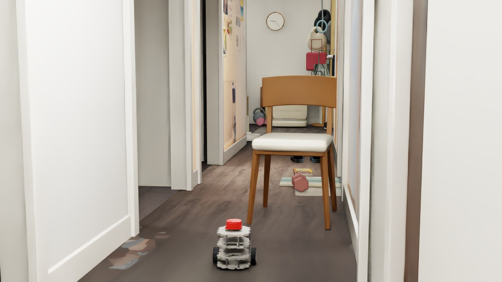
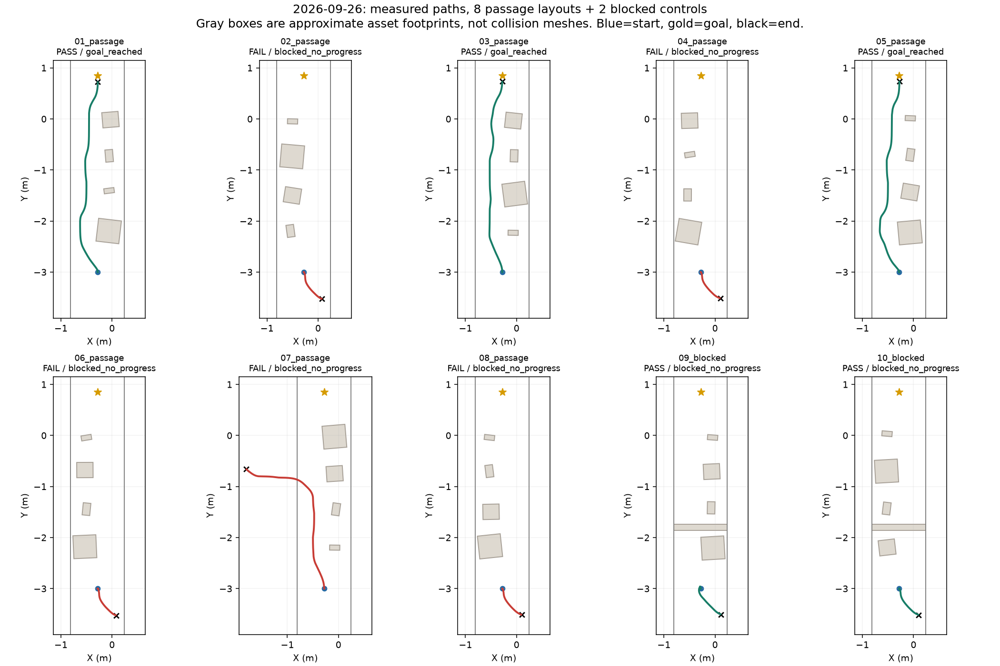
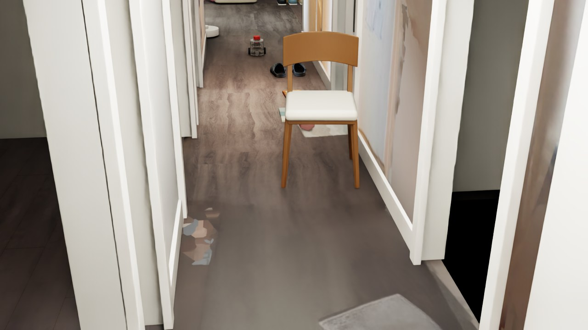
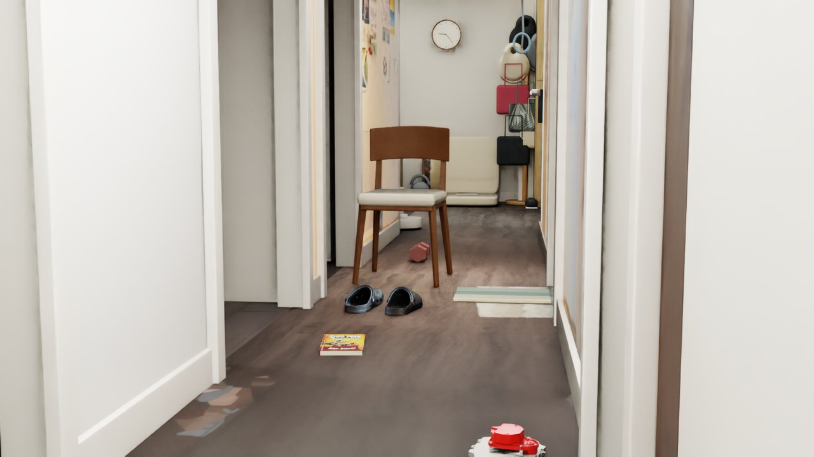
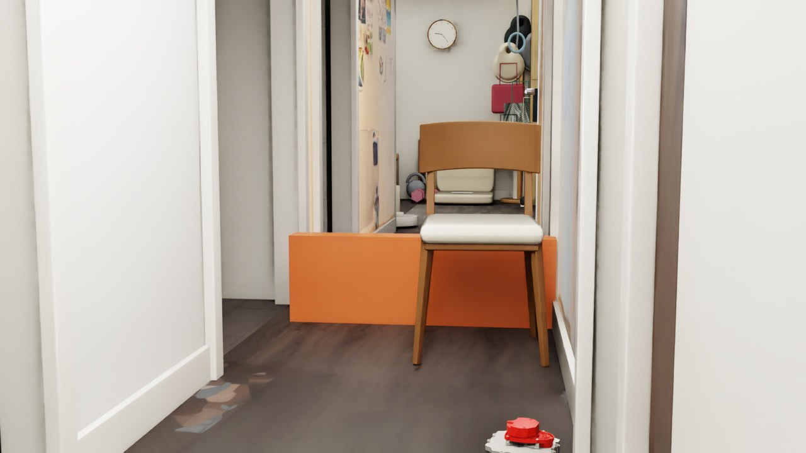

DEVLOG · 2026.09.26 · REPEATABLE NAVIGATION
换一种摆法，
还能通过吗？
昨天只通过一组固定布局。今天固定感知与控制参数，运行十组可复现测试，保留成功与失败。
01 / TEST DESIGN
改变布局，保持控制参数。
随机种子为 2026092601–2026092610。前八组在走廊左右两侧交替放置书、鞋、哑铃与椅子，随机改变顺序、位置和 ±10° 内的朝向，预留另一侧通道；后两组增加横跨走廊的静态挡板，检查无法通过时能否停车。
这是一组受约束的左右通道测试，不是任意位置、任意朝向的全面随机测试。准备阶段修正了摆放边界以避免旋转物品嵌入墙壁，早期中止的准备运行不计入正式十组。正式测试未中途调参或删除失败结果。
沿用昨日深度 + 水平 LiDAR、地面拟合、2.5 cm 占据网格与 A*，机器人膨胀半径 17.5 cm，线速度上限 0.065 m/s，角速度上限 0.55 rad/s。定位仍用仿真真实位姿，深度为理想渲染数据，障碍保持静态。

第一组：物品放在右侧，左侧留出通道。
02 / RESULTS
把到达与停车分开统计。
预留通道：3/8 到达并符合接触与制动要求。堵路对照：2/2 符合预设停车标准。这两组也出现向起点后方选路，最后由无进展保护停止；这里只满足预设停车判据，不能证明正确识别了堵路。堵路停车不能算作到达目标，不能合并成“十组都成功导航”。
| 组别 | 类型 | 验收 | 停止原因 | 仿真时长 | 最大接触力分量 |
|---|---|---|---|---|---|
| 01_passage | 预留通道 | 通过 | 到达目标 | 67.1 s | 0.000 N |
| 02_passage | 预留通道 | 未通过 | 无进展停车 | 18.3 s | 0.000 N |
| 03_passage | 预留通道 | 通过 | 到达目标 | 66.1 s | 0.000 N |
| 04_passage | 预留通道 | 未通过 | 无进展停车 | 18.3 s | 0.000 N |
| 05_passage | 预留通道 | 通过 | 到达目标 | 67.9 s | 0.000 N |
| 06_passage | 预留通道 | 未通过 | 无进展停车 | 18.3 s | 0.000 N |
| 07_passage | 预留通道 | 未通过 | 无进展停车 | 58.1 s | 0.000 N |
| 08_passage | 预留通道 | 未通过 | 无进展停车 | 18.3 s | 0.000 N |
| 09_blocked | 堵路对照 | 通过 | 无进展停车 | 19.3 s | 0.000 N |
| 10_blocked | 堵路对照 | 通过 | 无进展停车 | 18.3 s | 0.000 N |
到达阈值为距目标小于 12 cm；接触力采样分量不超过 0.1 N，停车后位移小于 3 cm。堵路组还要求因无路径或无进展停车，且停在挡板之前。每组最多 100 秒，18 秒没有足够目标距离改善则停车。零接触采样不等于连续时间的形式化证明。
03 / RECORDING
十组完整录像，包括失败。

十组实测轨迹：蓝点为起点，星号为目标，黑叉为终点。灰框仅示意资产占地。
逐组标注 PASS / FAIL 和停止原因。约 5 Hz 视口采集，按仿真时间编码为 25 fps，每组末尾保留约 1 秒。
打开完整录像 ↗
第一组结束位置：到达目标。

第二组失败：机器人转向起点后方，最终因目标距离无改善而停车。
04 / WHAT WE LEARNED
通过一组，不等于稳定可靠。
第二组的轨迹显示，初始朝目标方向后转身向起点后方行驶，最后触发无进展停车；该次没有检测到物体接触。这提示要检查感知地图与路径选择，不能用“推不动鞋子”解释，也不能仅凭录像认定某个传感器参数是根因。
第七组走到走廊侧面区域后也因无进展停车，最终 X 约 −1.81 m；这说明问题不只表现为起点处掉头。当前地图把未知区域视为可通行，累计障碍点不做动态清除，未独立核验深度帧时间戳。下一步应记录规划路径、占据图与深度平面拟合质量，在同一失败种子上隔离原因，再另开版本重跑；本轮结果保留作为基线。

堵路对照组：以独立挡板明确规定前方无法通行。
05 / REPLAY
结果与脚本一起保存。
十组结果 JSON · 下载测试脚本 · GitHub 图文与逐组轨迹报告
先保存场景，在已有本地 NavBot 项目中通过 Script Editor 运行。脚本依赖原场景和资产库，切换测试场景并覆盖同名结果，不能与其他控制脚本同时运行；只按 Play 不会启动整套测试。下载包不含模型。